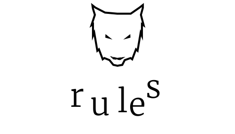

Gameplay
Welcome to Werewolf.
The game is played in day rounds and night rounds, aternating one after the other.
The goal is to eather to kill all of the villagers, or to kill all of the werewolves.
You chat to others by typing anywhere on the screen.
By placing a "#" in front of your message you can run the following commands:
- #rules - Open this page.
- #player [player] - Vote for a player or preform your role's action in the night. Replace [player] with the
player to preform the action on.
- #start - You can only run this command if you are the host. It starts the game.
- #whoami - Remind you what role you play. This will only show to you.
When the game starts, you get assigned a role.
The roles are the following:
- A Werewolf - During the night, when the game says "WEREWOLVES, AWAKEN!" you may choose one person to attack. During the day, you act like a villager.
If all living werewolves attack the same person in the night, they die, otherwise nothing happens. Your goal is to kill all of the villagers and their allies.
- A Villager - During the day, all villagers vote on one person to kill. The majority vote wins, and that person is
killed. Your goal is to rid the werewolves.
- The Seer - There is only one of these. During the night you can choose one person to "see". This will tell you if the are a werewolf or not.
During the day, you act like a villager. Your goal is to rid the werewolves.
Though out the rest of the game, you play your role accordingly until the end of the game, in witch you may reveal it. Your role whould also stay a secret,
unless you wish to reveal it to convince the villagers of someone else, or to defend yourself.